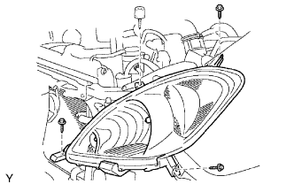

CỤM ĐÈN PHA > THÁO |
| 1. NGẮT CÁP ÂM RA KHỎI ẮC QUY |
| 2. THÁO LƯỚI CHE KÉT NƯỚC |
 |
Tháo 2 vít.
Dùng dụng cụ tháo kẹp, tháo kẹp ra.
Nhả khớp 5 vấu và tháo lưới che két nước.
| 3. THÁO NẮP BA ĐỜ XỐC TRƯỚC |
 |
Tháo 2 vít và 2 bu lông.
Dùng dụng cụ tháo kẹp, tháo 6 kẹp ra.
 |
Hãy dán băng dính bảo vệ phía dưới tai xe trước.
Nhả khớp 6 vấu và tháo nắp.
w/ Đèn sương mù:
Ngắt 2 giắc nối của đèn sương mù.
| 4. THÁO CỤM ĐÈN PHA BÊN TRÁI |
|  |
Tháo 3 vít và bulông.
Tháo giắc nối và tháo đèn pha.